徐悲鸿纪念馆
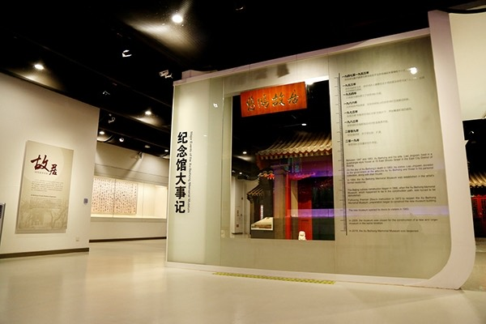
作品：徐悲鸿纪念馆新馆“纪念馆大事记”展陈（官方历史实景照片）
摄影：未署名；来源：北京市文物局
拍摄日期（来源声明）：未标注（来源报道发布于2019-09-20）
徐悲鸿纪念馆新馆“纪念馆大事记”展陈的历史实景。来自官网对应场馆报道。不代表当前开放、展陈、活动或设施状态；实际拍摄日期及摄影者未单独标注。
将来源原图保留原始尺寸600×400，并进行JPEG压缩（质量参数72）；未放大、裁切、重绘、去人物或换背景。页面按容器缩放、裁显；完整来源见链接。
照片及机械处理结果沿用各自标注的许可。保留原构图，仅按下列说明缩小和压缩。历史影像不代表当前开放、展览或季节；摄影者不因此为小程序背书。

作品：徐悲鸿纪念馆新馆“纪念馆大事记”展陈（官方历史实景照片）
摄影：未署名；来源：北京市文物局
拍摄日期（来源声明）：未标注（来源报道发布于2019-09-20）
徐悲鸿纪念馆新馆“纪念馆大事记”展陈的历史实景。来自官网对应场馆报道。不代表当前开放、展陈、活动或设施状态；实际拍摄日期及摄影者未单独标注。
将来源原图保留原始尺寸600×400，并进行JPEG压缩（质量参数72）；未放大、裁切、重绘、去人物或换背景。页面按容器缩放、裁显；完整来源见链接。
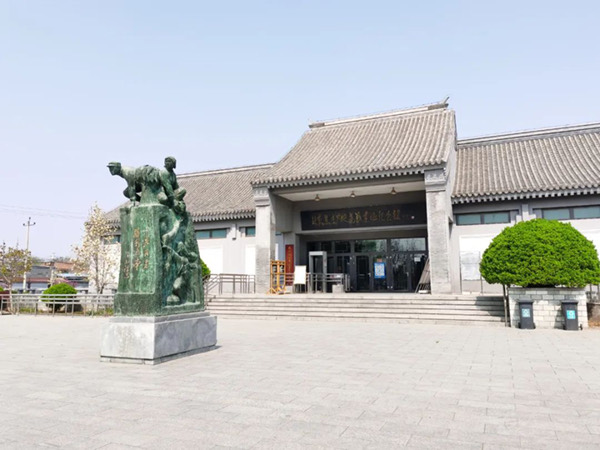
作品：北京焦庄户地道战遗址纪念馆馆舍及门前雕塑（官方历史实景照片）
摄影：未署名；来源：北京市文物局
拍摄日期（来源声明）：未标注（来源报道发布于2022-08-15）
北京焦庄户地道战遗址纪念馆馆舍及门前雕塑的历史实景。来自官网对应场馆报道。不代表当前开放、展陈、活动或设施状态；实际拍摄日期及摄影者未单独标注。
将来源原图保留原始尺寸600×450，并进行JPEG压缩（质量参数72）；未放大、裁切、重绘、去人物或换背景。页面按容器缩放、裁显；完整来源见链接。
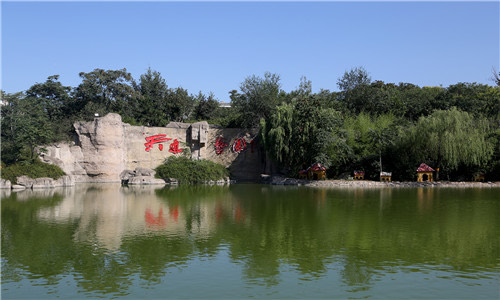
作品：天通艺园湖面与园名景石（官方历史实景照片）
摄影：何建勇；来源：北京市园林绿化局（首都绿化委员会办公室）
拍摄日期（来源声明）：未标注（来源报道发布于2020-11-13）
来源与完整原图 · 官网条件：非商业公共免费资料性使用，保留来源
天通艺园湖面与园名景石的历史实景。来自官网对应场馆报道。不代表当前开放、展陈、活动或设施状态；实际拍摄日期未单独标注。
将来源原图保留原始尺寸500×300，并进行JPEG压缩（质量参数72）；未放大、裁切、重绘、去人物或换背景。页面按容器缩放、裁显；完整来源见链接。
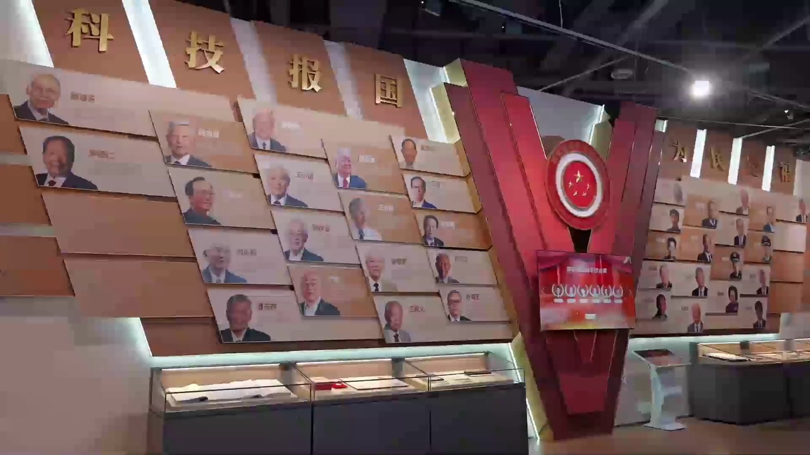
作品：科学家博物馆“科技报国”主题展墙（官方视频截图）
摄影：视频未单独标注摄影者；来源：北京市文物局
拍摄日期（来源声明）：未标注（来源报道发布于2026-08-14）
科学家博物馆“科技报国”主题展墙的历史实景。取自官方实拍视频约48秒处，保留完整画面及原有标识。不代表当前开放、展陈、活动或设施状态；实际拍摄日期及摄影者未单独标注。
从保留的官方原视频中提取完整静态帧后等比例缩小至1280×720，并进行JPEG压缩（质量参数72）；未放大、裁切、重绘、去人物或换背景。页面按容器缩放、裁显；完整来源见链接。
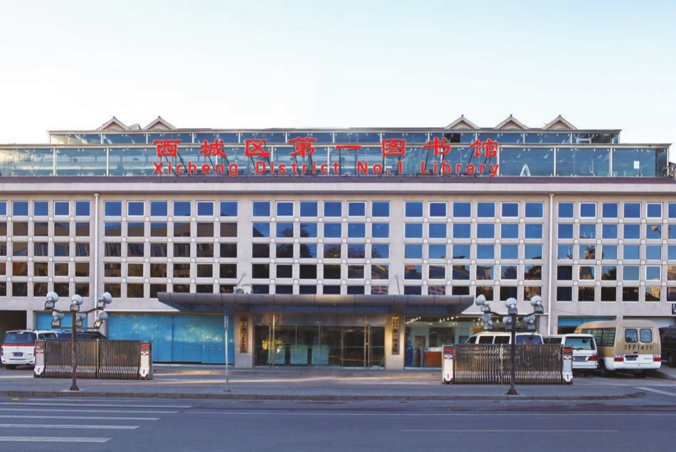
作品：西城区图书馆北址馆舍外观（原第一图书馆）（官方历史实景照片）
摄影：未署名；来源：北京市文化和旅游局
拍摄日期（来源声明）：未标注（来源：2020年公开的《基层公共文化设施宣传手册》）
来源与完整原图 · 官网条件：公共免费资料性使用，注明来源、不改原意
西城区图书馆北址馆舍外观（原第一图书馆）的历史实景。取自官方手册第26页的对应场馆条目，保留照片完整画面。不代表当前开放、展陈、活动或设施状态；实际拍摄日期及摄影者未单独标注。
提取官方PDF内嵌完整照片，按原文档色彩定义解码后保留原始尺寸950×635，并进行JPEG压缩（质量参数72）；未放大、裁切、重绘、去人物或换背景。页面按容器缩放、裁显；完整来源见链接。
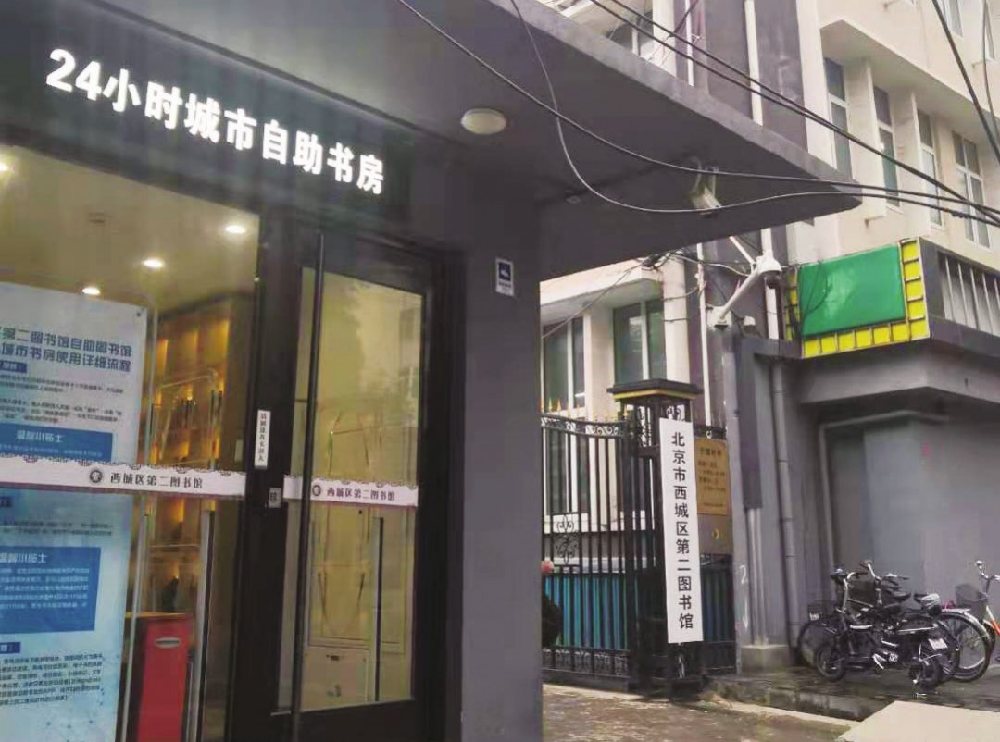
作品：西城区图书馆南址入口（原第二图书馆）（官方历史实景照片）
摄影：未署名；来源：北京市文化和旅游局
拍摄日期（来源声明）：未标注（来源：2020年公开的《基层公共文化设施宣传手册》）
来源与完整原图 · 官网条件：公共免费资料性使用，注明来源、不改原意
西城区图书馆南址入口（原第二图书馆）的历史实景。取自官方手册第29页的对应场馆条目，保留照片完整画面。不代表当前开放、展陈、活动或设施状态；实际拍摄日期及摄影者未单独标注。
提取官方PDF内嵌完整照片，按原文档色彩定义解码后保留原始尺寸1080×802，并进行JPEG压缩（质量参数72）；未放大、裁切、重绘、去人物或换背景。页面按容器缩放、裁显；完整来源见链接。
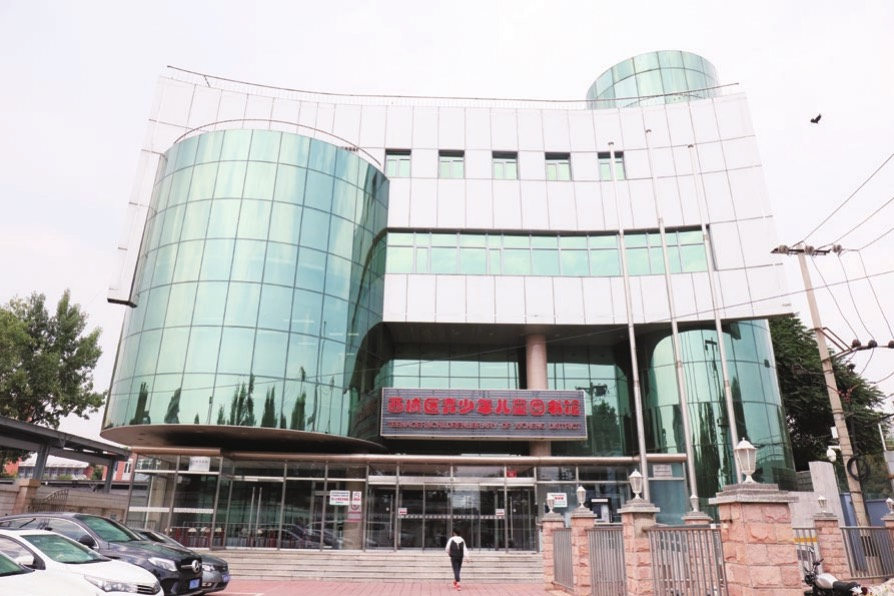
作品：西城区青少年儿童图书馆馆舍外观（官方历史实景照片）
摄影：未署名；来源：北京市文化和旅游局
拍摄日期（来源声明）：未标注（来源：2020年公开的《基层公共文化设施宣传手册》）
来源与完整原图 · 官网条件：公共免费资料性使用，注明来源、不改原意
西城区青少年儿童图书馆馆舍外观的历史实景。取自官方手册第30页的对应场馆条目，保留照片完整画面。不代表当前开放、展陈、活动或设施状态；实际拍摄日期及摄影者未单独标注。
提取官方PDF内嵌完整照片，按原文档色彩定义解码后保留原始尺寸894×596，并进行JPEG压缩（质量参数72）；未放大、裁切、重绘、去人物或换背景。页面按容器缩放、裁显；完整来源见链接。
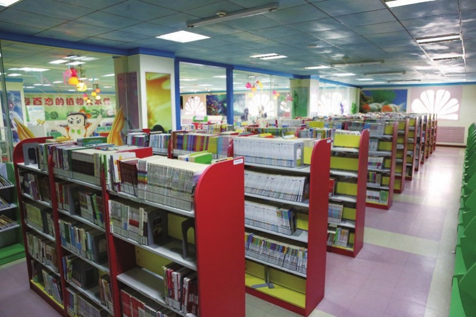
作品：平谷区图书馆总馆少儿借阅区域（官方历史实景照片）
摄影：未署名；来源：北京市文化和旅游局
拍摄日期（来源声明）：未标注（来源：2020年公开的《基层公共文化设施宣传手册》）
来源与完整原图 · 官网条件：公共免费资料性使用，注明来源、不改原意
平谷区图书馆总馆少儿借阅区域的历史实景。取自官方手册第332页的对应场馆条目，保留照片完整画面。不代表当前开放、展陈、活动或设施状态；实际拍摄日期及摄影者未单独标注。
提取官方PDF内嵌完整照片，按原文档色彩定义解码后保留原始尺寸800×533，并进行JPEG压缩（质量参数72）；未放大、裁切、重绘、去人物或换背景。页面按容器缩放、裁显；完整来源见链接。
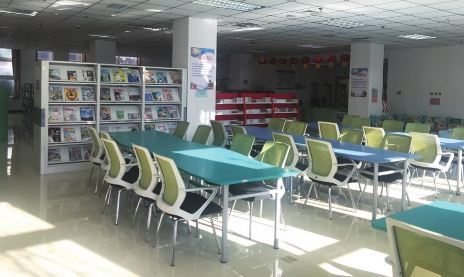
作品：密云区图书馆总馆儿童阅览区域（官方历史实景照片）
摄影：未署名；来源：北京市文化和旅游局
拍摄日期（来源声明）：未标注（来源：2020年公开的《基层公共文化设施宣传手册》）
来源与完整原图 · 官网条件：公共免费资料性使用，注明来源、不改原意
密云区图书馆总馆儿童阅览区域的历史实景。取自官方手册第374页的对应场馆条目，保留照片完整画面。不代表当前开放、展陈、活动或设施状态；实际拍摄日期及摄影者未单独标注。
提取官方PDF内嵌完整照片，按原文档色彩定义解码后保留原始尺寸919×549，并进行JPEG压缩（质量参数72）；未放大、裁切、重绘、去人物或换背景。页面按容器缩放、裁显；完整来源见链接。
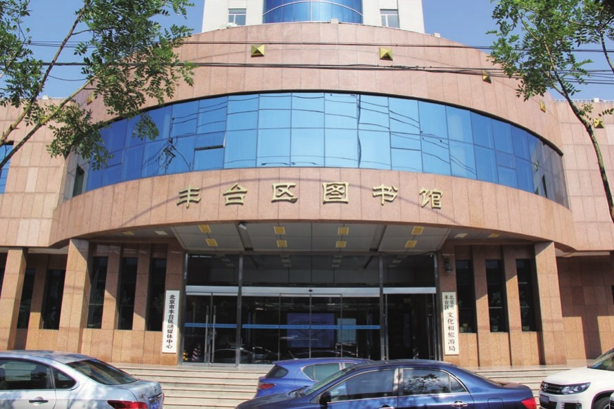
作品：丰台区图书馆北大地馆入口外观（官方历史实景照片）
摄影：未署名；来源：北京市文化和旅游局
拍摄日期（来源声明）：未标注（来源：2020年公开的《基层公共文化设施宣传手册》）
来源与完整原图 · 官网条件：公共免费资料性使用，注明来源、不改原意
丰台区图书馆北大地馆入口外观的历史实景。取自官方手册第141页的对应场馆条目，保留照片完整画面。不代表当前开放、展陈、活动或设施状态；实际拍摄日期及摄影者未单独标注。
提取官方PDF内嵌完整照片，按原文档色彩定义解码后保留原始尺寸892×595，并进行JPEG压缩（质量参数72）；未放大、裁切、重绘、去人物或换背景。页面按容器缩放、裁显；完整来源见链接。
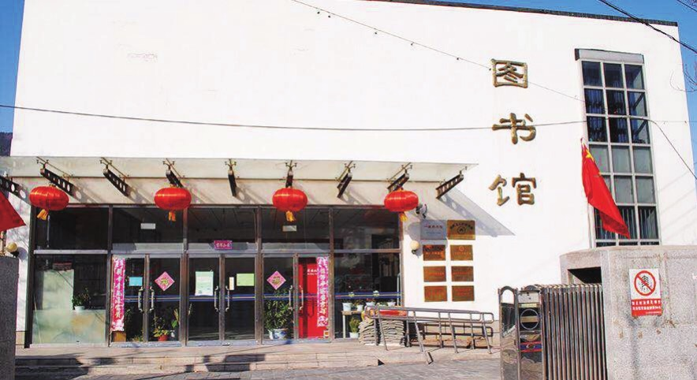
作品：门头沟区图书馆馆舍入口（官方历史实景照片）
摄影：未署名；来源：北京市文化和旅游局
拍摄日期（来源声明）：未标注（来源：2020年公开的《基层公共文化设施宣传手册》）
来源与完整原图 · 官网条件：公共免费资料性使用，注明来源、不改原意
门头沟区图书馆馆舍入口的历史实景。取自官方手册第180页的对应场馆条目，保留照片完整画面。不代表当前开放、展陈、活动或设施状态；实际拍摄日期及摄影者未单独标注。
提取官方PDF内嵌完整照片，按原文档色彩定义解码后保留原始尺寸884×482，并进行JPEG压缩（质量参数72）；未放大、裁切、重绘、去人物或换背景。页面按容器缩放、裁显；完整来源见链接。
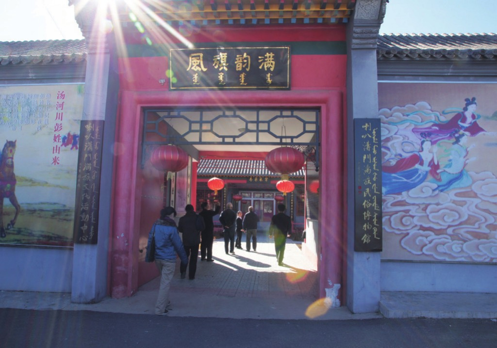
作品：喇叭沟门满族民俗博物馆馆门历史实景（官方历史实景照片）
摄影：未署名；来源：北京市文物局
拍摄日期（来源声明）：未标注（来源：2011年《北京文物》第4期（2011-08-28））
喇叭沟门满族民俗博物馆馆门历史实景的历史实景。取自官方手册第第三版页的对应场馆条目，保留照片完整画面。不代表当前开放、展陈、活动或设施状态；实际拍摄日期及摄影者未单独标注。
提取官方PDF内嵌完整照片，按原文档色彩定义解码后保留原始尺寸1024×718，并进行JPEG压缩（质量参数72）；未放大、裁切、重绘、去人物或换背景。页面按容器缩放、裁显；完整来源见链接。
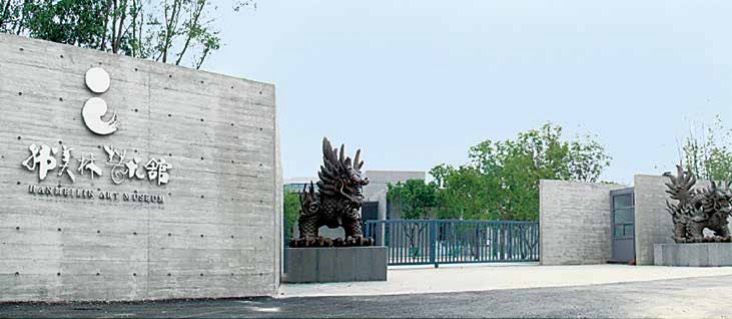
作品：北京韩美林艺术馆馆名墙与园门（官方历史实景照片）
摄影：未署名；来源：北京市文化和旅游局
拍摄日期（来源声明）：未标注（来源：2019年公开的《北京市残障人士文化旅游资源手册》）
来源与完整原图 · 官网条件：公共免费资料性使用，注明来源、不改原意
北京韩美林艺术馆馆名墙与园门的历史实景。取自官方手册第26–27页的对应场馆条目，保留照片完整画面。不代表当前开放、展陈、活动或设施状态；实际拍摄日期及摄影者未单独标注。
提取官方PDF内嵌完整照片，按原文档色彩定义解码后保留原始尺寸732×319，并进行JPEG压缩（质量参数72）；未放大、裁切、重绘、去人物或换背景。页面按容器缩放、裁显；完整来源见链接。
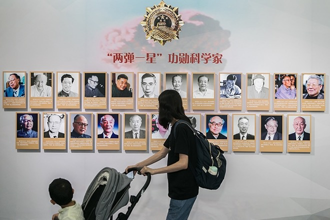
作品：北京科学中心科学家精神主题展历史实景（官方历史实景照片）
摄影：未署名；来源：北京市科学技术协会／北京科普发展与研究中心
拍摄日期（来源声明）：未标注（来源报道发布于2022-08-05）
北京科学中心科学家精神主题展历史实景的历史实景。来自官网对应场馆报道。不代表当前开放、展陈、活动或设施状态；实际拍摄日期及摄影者未单独标注。
将来源原图保留原始尺寸660×440，并进行JPEG压缩（质量参数72）；未放大、裁切、重绘、去人物或换背景。页面按容器缩放、裁显；完整来源见链接。
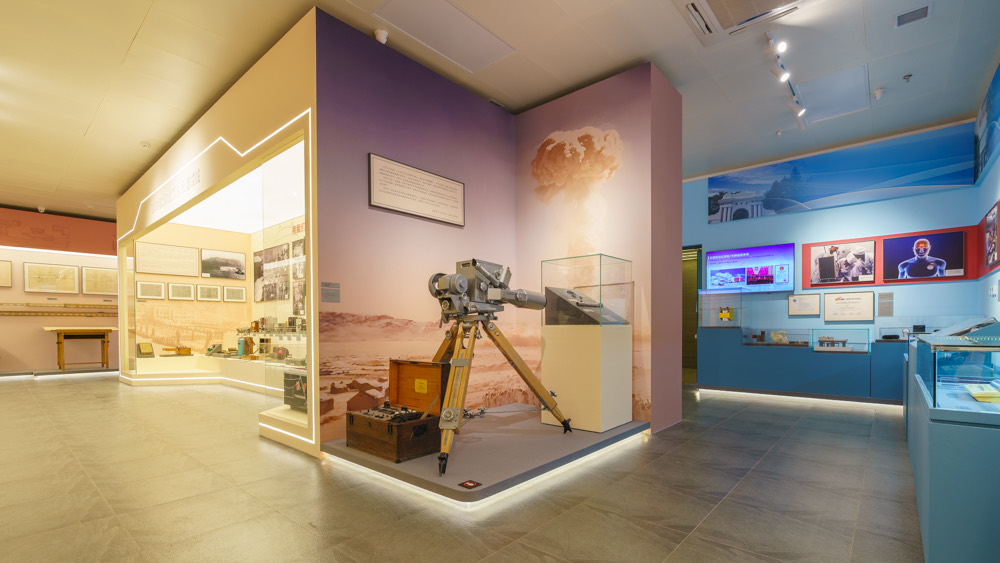
作品：清华大学科学博物馆蒙民伟人文楼B207“百年器象”展厅（官方历史实景照片）
摄影：未署名；来源：清华大学科学博物馆
拍摄日期（来源声明）：未标注（来源报道发布于2024-10-11）
清华大学科学博物馆蒙民伟人文楼B207“百年器象”展厅的历史实景。来自官网对应场馆报道。不代表当前开放、展陈、活动或设施状态；实际拍摄日期及摄影者未单独标注。
将来源原图保留原始尺寸1000×563，并进行JPEG压缩（质量参数72）；未放大、裁切、重绘、去人物或换背景。页面按容器缩放、裁显；完整来源见链接。